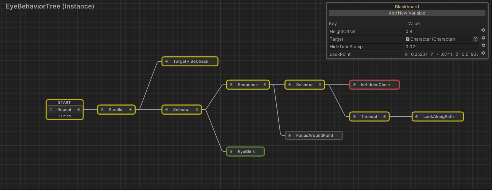
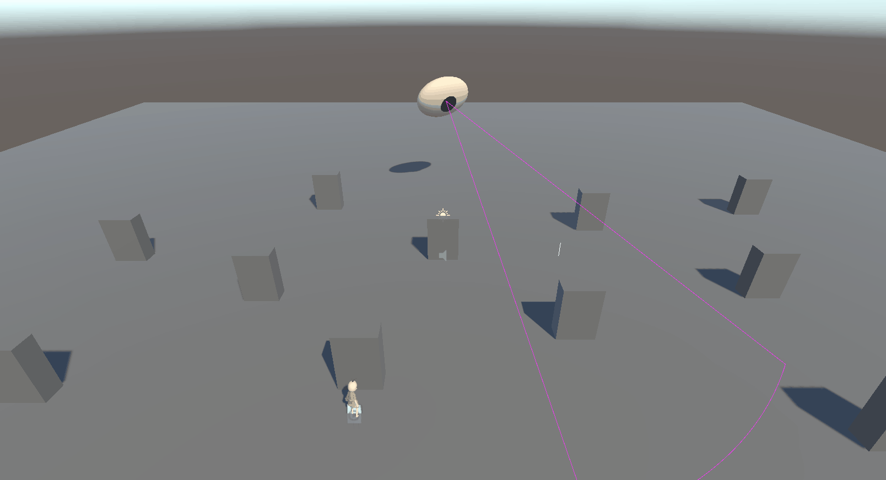
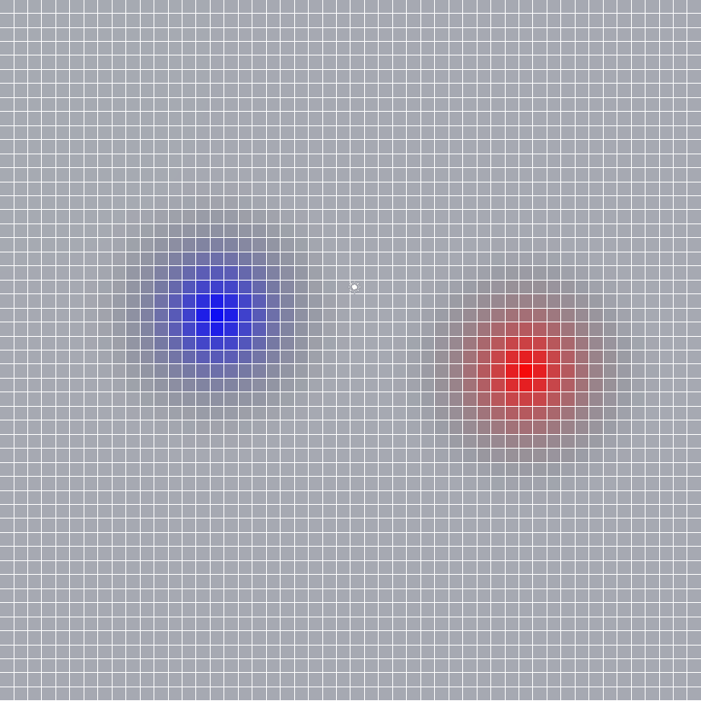

AI Systems
This project site is a compilation of the various AI related systems I have developed by myself. Most of these systems are based on articles from the Game AI Pro books or sessions from GDC.
Behavior Tree
Developed Behavior Tree System and a Visual Editor for it to create Behaviors for game Agents.
- References
- The Behavior Tree Starter Kit, Alex Champandard, Philip Dunstan, Game AI Pro 1

Position Query System
Developed a Position Query System to evaluate the enviroment around an Agent and select positions in a better and smarter way.
- References
- Tactical Position Selection: An Architecture and Query Language, Matthew Jack, Game AI Pro 1
- Guide to Effective Auto-Generated Spatial Queries, Eric Johnson, Game AI Pro 3
- Taming Spatial Queries - Tips for Natural Position Selection, Eric Johnson, Game AI Pro 4

Combat Circle
Developed a Combat Circle for Agents to surround a Target and take turns attacking based on different customizable rules.
- References
- Beyond the Kung-Fu Circle: A Flexible System for Managing NPC Attacks, Michael Dawe, Game AI Pro

Perception System
Developed a Perception System for Agents to perceive the enviroment be it through Visual or Audio stimuli that are tracked and timed.
Crytek's Target Tracks Perception System by Rich Welsh from the first volume of Game AI Pro.

Influence Map
Developed an Influece Map to represent the state of the enviroment based on different customizable factions.
- References
- Spatial Knowledge Representation through Modular Scalable Influence Maps, Dave Mark, GDC 2018
- Modular Tactical Influence Maps, Dave Mark, Game AI Pro 2

Artificial Neural Network
Wrote my Bachelor's Degree thesis about the application of Artificial Neural Networks for video game Agents. Developed a simple Neural Network and trained it through Supervised Learning. Used Unity ML Agents to train through Reinforcement learning a Camera based Agent and a Sensor based Agent.
Bachelor's degree thesis